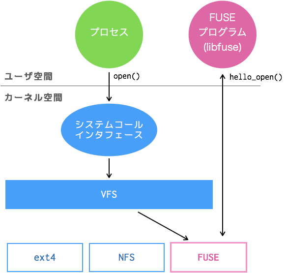

libfuse で Hello World !
GlusterFS でも利用されている FUSE を使って、Hello World を試して見た。 今回は libfuse を使って、仮想ファイルシステム上のファイルを cat すると Hello World ! が出力されるまで。
$ cat fuse/hello
Hello World!
FUSE (Filesystem in Userspace)
FUSE は、linux 2.6.14 で追加されたカーネルの機能で、ファイルシステムをユーザ空間の プログラムで実装できる仕組み提供する。これにより、カーネルコードを修正することなく、 ユーザ空間で独自のファイルシステムを作成できるようになる。

Wikipedia によると、Linux だけでなく、*BSD や MAC とかでも実装があるらしい。
環境
確認はいつものごとく Vagrant で。
Vagrant.configure("2") do |config|
config.vm.box = "centos/7"
config.vm.provision "shell",
inline: "yum install -y fuse fuse-devel gcc"
end
- CentOS 7
- kernel 3.10.0-693.5.2.el7.x86_64
- fuse 2.9.2
libfuse の使い方
とりあえず動かして見る。Hello World するためのソース全文。
これを hello.c として保存し、ビルドする。ビルドされた hello にマウントポイントを
渡して実行すると、helloFS？にアクセスできる。マウントは一般ユーザでも可能。
curl -Lo hello.c https://goo.gl/igCjey
gcc -Wall hello.c `pkg-config fuse --cflags --libs` -o hello
mkdir fusedir
./hello fusedir/
Hello World !
[vagrant@localhost ~]$ ls fusedir/
hello
[vagrant@localhost ~]$ cat fusedir/hello
Hello World!
ちなみに、実行した hello は init にぶら下がった状態になった。
[vagrant@localhost ~]$ ps -lfC hello
F S UID PID PPID C PRI NI ADDR SZ WCHAN STIME TTY TIME CMD
1 S vagrant 3531 1 0 80 0 - 39640 futex_ 15:41 ? 00:00:00 ./hello fusedir/
マウントの状態はこんな感じ。
[vagrant@localhost ~]$ mount -t fuse.hello
/home/vagrant/hello on /home/vagrant/fusedir type fuse.hello (rw,nosuid,nodev,relatime,user_id=1000,group_id=1000)
hello.c の中身
ソースの頭の方を見ると、だいたい使い方がわかる。
#include <fuse.h>
...
static int hello_getattr(const char *path, struct stat *stbuf);
static int hello_readdir(const char *path, void *buf, fuse_fill_dir_t filler,off_t offset, struct fuse_file_info *fi);
static int hello_open(const char *path, struct fuse_file_info *fi);
static int hello_read(const char *path, char *buf, size_t size, off_t offset, struct fuse_file_info *fi);
static struct fuse_operations hello_oper = {
.getattr = hello_getattr,
.readdir = hello_readdir,
.open = hello_open,
.read = hello_read,
};
int main(int argc, char *argv[])
{
return fuse_main(argc, argv, &hello_oper, NULL);
}
...
プログラムのmain()で実行しているのがfuse_main()。
この引数には、コマンド実行時の引数に加えfuse_operations構造体が渡されている。
この構造体に、ファイル操作に絡むシステムコールに対応する hook関数を登録する。
fuse_operations構造体
どういったシステムコールが登録できるかは/usr/include/fuse/fuse.hにある
fuse_operations構造体の定義をみればよい。
定義をざっくり grep すると、こんな感じのシステムコールの hook が登録できる。
[vagrant@localhost ~]$ awk '/^struct fuse_operations/,/^}/' /usr/include/fuse/fuse.h | grep "^ *int"
int (*getattr) (const char *, struct stat *);
int (*readlink) (const char *, char *, size_t);
int (*getdir) (const char *, fuse_dirh_t, fuse_dirfil_t);
int (*mknod) (const char *, mode_t, dev_t);
int (*mkdir) (const char *, mode_t);
int (*unlink) (const char *);
int (*rmdir) (const char *);
int (*symlink) (const char *, const char *);
int (*rename) (const char *, const char *);
int (*link) (const char *, const char *);
int (*chmod) (const char *, mode_t);
int (*chown) (const char *, uid_t, gid_t);
int (*truncate) (const char *, off_t);
int (*utime) (const char *, struct utimbuf *);
int (*open) (const char *, struct fuse_file_info *);
int (*read) (const char *, char *, size_t, off_t,
int (*write) (const char *, const char *, size_t, off_t,
int (*statfs) (const char *, struct statvfs *);
int (*flush) (const char *, struct fuse_file_info *);
int (*release) (const char *, struct fuse_file_info *);
int (*fsync) (const char *, int, struct fuse_file_info *);
int (*setxattr) (const char *, const char *, const char *, size_t, int);
int (*getxattr) (const char *, const char *, char *, size_t);
int (*listxattr) (const char *, char *, size_t);
int (*removexattr) (const char *, const char *);
int (*opendir) (const char *, struct fuse_file_info *);
int (*readdir) (const char *, void *, fuse_fill_dir_t, off_t,
int (*releasedir) (const char *, struct fuse_file_info *);
int (*fsyncdir) (const char *, int, struct fuse_file_info *);
int (*access) (const char *, int);
int (*create) (const char *, mode_t, struct fuse_file_info *);
int (*ftruncate) (const char *, off_t, struct fuse_file_info *);
int (*fgetattr) (const char *, struct stat *, struct fuse_file_info *);
int (*lock) (const char *, struct fuse_file_info *, int cmd,
int (*utimens) (const char *, const struct timespec tv[2]);
int (*bmap) (const char *, size_t blocksize, uint64_t *idx);
int (*ioctl) (const char *, int cmd, void *arg,
int (*poll) (const char *, struct fuse_file_info *,
int (*write_buf) (const char *, struct fuse_bufvec *buf, off_t off,
int (*read_buf) (const char *, struct fuse_bufvec **bufp,
int (*flock) (const char *, struct fuse_file_info *, int op);
int (*fallocate) (const char *, int, off_t, off_t,
補足
プログラム側で定義していない属性値や関数は、以下のようになった。
[vagrant@localhost ~]$ stat fusedir/hello
File: ‘fusedir/hello’
Size: 13 Blocks: 0 IO Block: 4096 regular file
Device: 27h/39d Inode: 2 Links: 1
Access: (0444/-r--r--r--) Uid: ( 0/ root) Gid: ( 0/ root)
Context: system_u:object_r:fusefs_t:s0
Access: 1970-01-01 00:00:00.000000000 +0000
Modify: 1970-01-01 00:00:00.000000000 +0000
Change: 1970-01-01 00:00:00.000000000 +0000
Birth: -
ファイルの属性は、サイズ、権限、リンク数しか定義していない。このため、日時やオーナは 初期値になっている模様。
[vagrant@localhost ~]$ sudo rm fusedir/hello
rm: cannot remove ‘fusedir/hello’: Permission denied
[vagrant@localhost ~]$
[vagrant@localhost ~]$ sudo chown vagrant: fusedir/hello
chown: cannot access ‘fusedir/hello’: Permission denied
[vagrant@localhost ~]$
hook を登録していないシステムコールは EACCES になった。